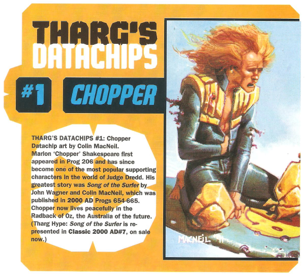

A series (located in the Nerve Centre) that provides a quick-fire summary of various 2000 AD thrills.
Art by Colin MacNeil
| Title | Parts | Pages | w indicates a wraparound coverCovers | Year(s) | Issues | Writer | Artist | Colourist | Letterer |
|---|---|---|---|---|---|---|---|---|---|
Linked to Chopper#1: Chopper | 1 | 0.5 | 0 | 1996 | 984 | n/a | Colin MacNeil | <-- | n/a |
Linked to The Visible Man#2: The Visible Man | 1 | 0.5 | 0 | 1996 | 985 | n/a | Chris Weston | <-- | n/a |
Linked to D.R. & Quinch#3: D.R. & Quinch | 1 | 0.5 | 0 | 1996 | 986 | n/a | Alan Davis | <-- | n/a |
Linked to Tyranny Rex#4: Tyranny Rex | 1 | 0.5 | 0 | 1996 | 987 | n/a | Mark Buckingham | <-- | n/a |
Linked to Bradley#5: Bradley | 1 | 0.5 | 0 | 1996 | 988 | n/a | Simon Harrison | <-- | n/a |
Linked to Slaine#6: Slaine | 1 | 0.5 | 0 | 1996 | 989 | n/a | Glenn Fabry | <-- | n/a |
Linked to Slaine#7: Ukko | 1 | 0.5 | 0 | 1996 | 990 | n/a | Glenn Fabry | <-- | n/a |
Linked to Hewligan's Haircut#8: Hewligan & Scarlet | 1 | 0.5 | 0 | 1996 | 991 | n/a | Jamie Hewlett | <-- | n/a |
Linked to Invasion#9: Bill Savage | 1 | 0.5 | 0 | 1996 | 992 | n/a | Eric Bradbury | <-- | n/a |
Linked to [Feral]#10: Feral | 1 | 0.5 | 0 | 1996 | 993 | n/a | Steve Pugh | <-- | n/a |
Linked to Judge Hershey#11: Judge Hershey | 1 | 0.5 | 0 | 1996 | 994 | n/a | John Burns | <-- | n/a |
Linked to Walter the Wobot#12: Walter the Wobot | 1 | 0.5 | 0 | 1996 | 995 | n/a | Steve Yeowell | <-- | n/a |
Linked to Joe Pineapples#13: Joe Pineapples | 1 | 0.5 | 0 | 1996 | 996 | n/a | Kevin Walker | <-- | n/a |
Linked to Anderson Psi‑Division#14: Anderson Psi Division | 1 | 0.5 | 0 | 1996 | 997 | n/a | John Burns | <-- | n/a |
Linked to Max Normal#15: Max Normal | 1 | 0.5 | 0 | 1996 | 998 | n/a | Jose Casanovas | <-- | n/a |
Linked to Tharg the Mighty#16: Thrill-Sucker! | 1 | 0.5 | 0 | 1996 | 999 | n/a | Eric Bradbury | <-- | n/a |
| year | episodes | pages |
| 1986 | 0 | 0 |
| 1987 | 0 | 0 |
| 1988 | 0 | 0 |
| 1989 | 0 | 0 |
| 1990 | 0 | 0 |
| 1991 | 0 | 0 |
| 1992 | 0 | 0 |
| 1993 | 0 | 0 |
| 1994 | 0 | 0 |
| 1995 | 0 | 0 |
| 1996 | 16 | 8 |
| 1997 | 0 | 0 |
| 1998 | 0 | 0 |
| 1999 | 0 | 0 |
| 2000 | 0 | 0 |
| 2001 | 0 | 0 |
| 2002 | 0 | 0 |
| 2003 | 0 | 0 |
| 2004 | 0 | 0 |
| 2005 | 0 | 0 |
| 2006 | 0 | 0 |